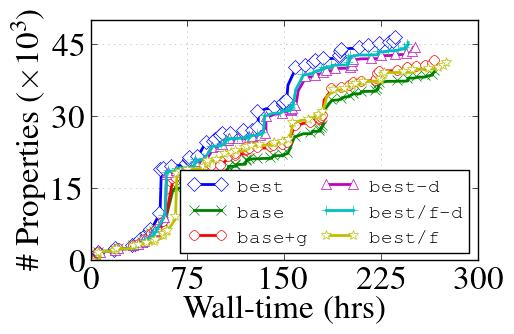
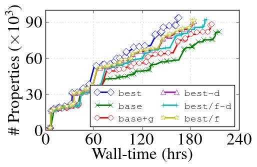
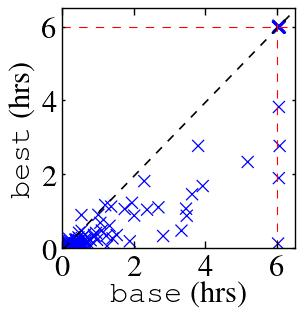
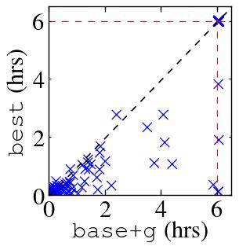

Accelerating Parallel Verification via Complementary Property Partitioning and Strategy Exploration
Rohit Dureja, Jason Baumgartner, Robert Kanzelman, Mark Williams and Kristin Yvonne Rozier
This webpage contains supplementary experimental data for "Accelerating Parallel Verification via Complementary Property Partitioning and Strategy Exploration" by R. Dureja, J. Baumgartner, R. Kanzelman, M. Williams, and K. Y. Rozier.
Most of the experimental results are described in the paper. This webpage contains some additional results for tuning a localization portfolio and performance of benchmark sets B1, B2, and B3 with different portfolios (including the ones not described in the paper)
Localization portfolios
We compare six different 6-process localization portfolios (the portfolios marked with * are different from the paper). These are derived from Fig. 13 in the paper.- base: No property grouping or incremental repetition of properties; all processes iterate properties in forward order. This represents a standard state-of-the-art localization portfolio approach, without property grouping.
- base+g: extends base with affinity property grouping, including semantic partitioning in one Fast-and-Lossy and one Aggressive strategy. This represents a state-of-the-art localization portfolio with property grouping.
- best-d: extends base+g with incremental repetition (R) and irredundant iteration order (I), to reduce wall time.
- best: extends best-d with decomposition (D).
- *best/f-d: similar to best-d except all localization processes use the Fast-and-Lossy strategy
- *best/f: extends best/f-d with property decomposition (D).
Tuning the localization portfolio
We evaluate several settings for choosing optimal localization configurations on proprietary benchmarks. We evaluate 36 different localization configurations with 30 different proof strategies. The results are summarized in a spreadsheet.Basic localization settings
Portfolios 1--4 (from the paper)
S1 only performs counterexample-based refinement. S2 vs. S3 perform hybrid counterexample-based refinement with light PBA (capped SAT time limits) after every unsatisfiable BMC step vs. only before the subsequent solving strategy, respectively. Abstract-netlist gates remaining after PBA in S2 are considered committed and cannot be eliminated in further PBA steps. S3 utilizes a minimal unsatisfiable core to further reduce the abstract netlist. S1,S2 and S3 use a time-limit of 300 seconds per property/group. S4-S6 are identical to S1-S3, respectively, without imposed time-limits and modulo the subsequent solving strategy differences (Fast-and-Lossy vs. Aggressive).Portfolios 5--6
S1, S2 and S3 are same as above. S4--S6 are identical to S1--S3, respectively, without imposed time-limits, use the same solving Fast-and-Lossy strategy and iterate properties in reverse order.Fast-and-Lossy strategy
This strategy uses counterexample-based refinement mainly with no or lighter PBA for faster BMC, yielding larger abstract netlists solved using light combinational rewriting, input elimination, then IC3.Aggressive strategy
This strategy uses both counterexample- and proof-based abstraction, yielding smallest abstract netlists solved using combinational rewriting; input elimination which is especially powerful after localization due to inserted cutpoints; min-area retiming; a nested induction-only gate-based sequential redundancy removal; then IC3.Additional results
The plots in Fig. 1 and Fig. 2 shows the cumulative number of properties solved by each portfolio for sets B1 and B2. The interesting point to note is that while the number of properties solved is larger with Fast-and-Lossy in portfolios best/f-d and best/f compared to base and base+g, the best portfolio that uses balanced Fast-and-Lossy and Aggressive strategies, outperforms both best/f-d and best/f. This emphasizes how critical the Aggressive strategy to solve difficult miters is to the overall redundancy removal process.


